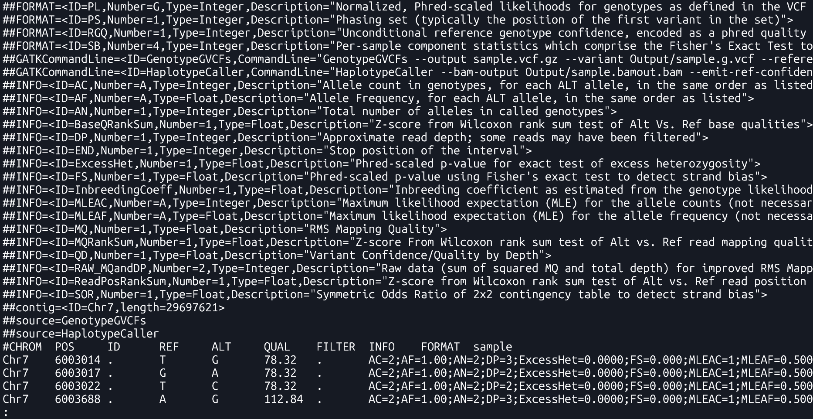
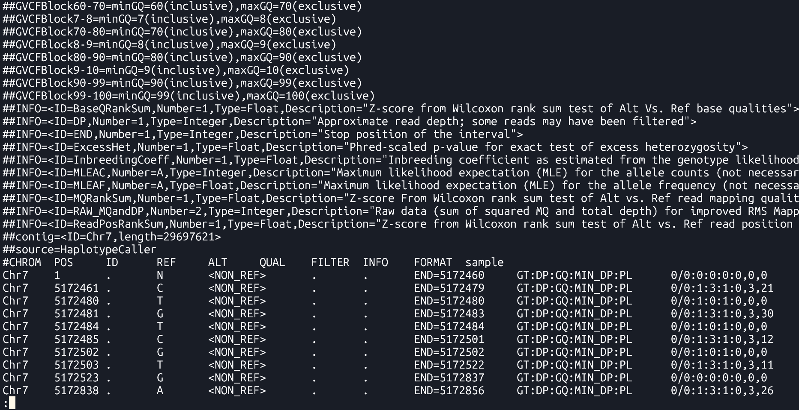

Basic NGS Data Analysis
üéØ Module Introduction:
In this module, you will be introduced to the fundamental principles of analyzing Next-Generation Sequencing (NGS) data. The course begins with an overview of various NGS technologies and the types of data they generate. Following this, you will learn how to identify Single Nucleotide Polymorphisms (SNPs) within resequencing datasets. The module also covers essential quality control measures, techniques for filtering erroneous data, and basic statistical analyses to interpret the biological significance of the identified SNPs.
.Section 1: Variant Calling
üèÅ Learning Objectives:
- To develop proficiency in utilizing the Genome Analysis Toolkit (GATK) workflow for variant calling
- To understand the process of preparing raw data to meet the specifications of the GATK workflow
- Apply knowledge gained from GATK variant calling workflow to effectively identify and characterize genetic variants, including single nucleotide polymorphisms (SNPs) and small insertions/deletions (indels)
Variant Calling
- Definition
- Variant calling is the process of identifying genetic variations (such as SNPs and indels) in a sample by comparing it against a reference genome.
- Purpose
- To detect differences between sequenced data and the reference genome, which may indicate important genetic variations related to traits, diseases, or evolutionary processes.
- Applications
- Understanding genetic diversity
- Identifying genes associated with traits
- Improving rice breeding
Tools:
- BWA
A software package for mapping low-divergent sequences against a large reference genome - Genome Analysis Toolkit (GATK)
Offers a wide variety of tools with primary focus on variant discovery and genotyping - FastP
A tool designed to provide fast all-in-one preprocessing for FastQ files - FastQC
A quality control tool for high throughput sequence data - Picard
A set of command line tools for manipulating high-throughput sequencing data - SAMtools
Tool that provides various utilities for manipulating alignments in the SAM and BAM formats
Input Files:
- Raw reads
- Format:
FASTQ (.fq, .fastq, .fastq.gz) - FASTQ: Used to store both the nucleotide sequence data and quality scores
- 1st line: Sequence identifier
- 2nd line: Sequence
- 3rd line: Quality score identifier
- 4th line: Base quality scores
- Format:
- Reference
- Format:
FASTA (.fasta, .fa, .fsa) - FASTA: A text-based format for representing collections of nucleotide or protein sequences. The file consists of several blocks, each containing a header line and sequence lines. Typically, each block contains a sequence of a whole chromosome or a contig.
- Line 1: A header line starting with a
>character, which contains information about the sequence. - Line 2: Sequence (can occupy several lines)

- Format:
Intermediate Files:
-
Sequence Alignment/Map Format (SAM)
- a. Format for storing large nucleotide sequence alignments
- b. A
.samfile consists of two sections:- Header (lines starting with
@): Contains metadata about the reference genome and alignment process. - Alignment section: Contains one line per read, describing its alignment to the reference.
Example
.samcontent:@HD VN:1.6 SO:coordinate @SQ SN:chr1 LN:248956422 @PG ID:bwa PN:bwa VN:0.7.17-r1188 read123 0 chr1 1000 60 100M * 0 0 ACGTACGT... TGCAACGT... read456 16 chr1 1050 60 100M * 0 0 TGCAGTCA... ACGTTGCA...Explanation of fields in alignment lines (tab-delimited):
- QNAME: Query name (e.g., read ID)
- FLAG: Bitwise flag describing the read (e.g., strand, pairing)
- RNAME: Reference sequence name (e.g., chr1)
- POS: 1-based position where alignment starts
- MAPQ: Mapping quality (0–60, higher is better)
- CIGAR: CIGAR string describing alignment (e.g., 100M = 100 matched bases)
- RNEXT: Next read's reference name (for paired-end)
- PNEXT: Position of the next read (paired-end)
- TLEN: Template length
- SEQ: Read sequence
- QUAL: Quality scores (ASCII-encoded)
- Header (lines starting with
-
Binary SAM files (BAM)
- Binary version of the SAM format
- To view the file, use:
- Specification document (section 4)
samtools view [BAMfile] -
BAM Index files
samtools index– indexes SAM/BAM/CRAM files- Syntax:
samtools index [options] [BAMfile]
Output File:
- Variant Call Format (VCF)
- A file format used to store genetic variants, including their genomic position, reference and alternate alleles, quality scores, and sample-specific genotype data . It only lists positions where a variant is present.
- Specification document 
- Genomic Variant Call Format (gVCF)
- A kind of VCF that includes both variant and non-variant regions. It provides information about regions where no variation was found, which helps in later combining data from multiple samples. 
Section 2: Variant Calling Pipeline
Description
This is a pipeline for variant calling based on best practices for GATK4
Requirements and Preparation
- Ubuntu installation on your laptop/workstation
- Installation of the necessary tools
- BWA, FastP, FastQC, GATK4, Picard, Samtools
- Demo dataset
- Reference:
Ref.fasta - Data:
sample-1_1.fq.gz sample-1_2.fq.gz
Pipeline

Reference Data Preparation (Indexing)
Tools: bwa index, samtools faidx, picard CreateSequenceDictionary
Purpose
Indexing improves the ability of tools to rapidly access random locations of the file. It allows efficient retrieval of sequence data from the FASTA file.
Commands
The following commands are essential for preparing the reference genome and supporting tools for alignment and variant calling:
BWA Index
| bwa index [Reference.fasta] |
bwa index: This command generates an index for the reference genome. The index allows the aligner (like bwa) to quickly locate matching sequences during alignment, making the process more efficient.
Output Files: Several index files are generated in the same directory as the FASTA:
Ref.fasta.bwtRef.fasta.pacRef.fasta.annRef.fasta.ambRef.fasta.sa
File descriptions:
.bwt– Burrows-Wheeler Transform of the reference.pac– Packed version of the reference sequence.ann– Annotation file with contig names and lengths.amb– Information about ambiguous bases (Ns).sa– Suffix array used for fast search
These files allow bwa to perform fast sequence lookups during read alignment.
Samtools faidx
| samtools faidx [Reference.fasta] |
samtools faidx: This command creates an index file (.fai) for the reference FASTA file. This index is required by tools like GATK to quickly access specific sequences from the reference genome during operations like variant calling.
Output: Ref.fasta.fai
The .fai file is a tab-delimited index
This index is required by GATK and other tools to reference genome positions directly and efficiently.
Example .fai content:
chr1 248956422 52 60 61
chr2 242193529 253404903 60 61
chr3 198295559 500657153 60 61
Columns:
- Sequence name (e.g., chr1)
- Sequence length in bases
- Byte offset of the first base in the FASTA file
- Line length of sequence lines in the FASTA
- Line width including newline characters
Picard CreateSequenceDictionary
| java -jar $PICARD CreateSequenceDictionary -REFERENCE [Reference.fasta] -OUTPUT [Reference.dict] |
picard CreateSequenceDictionary: This command generates a sequence dictionary file (.dict) from the reference FASTA file. This file is required by tools like GATK for proper handling of BAM files and ensures that genomic sequences can be accessed correctly during analysis.
Output: Ref.dict
The .dict file is a text file containing metadata for each sequence (contig) in the FASTA, such as its name, length, and MD5 checksum, allowing tools to validate and synchronize reference data across workflows.
Example .dict content:
@HD VN:1.6 SO:coordinate
@SQ SN:chr1 LN:248956422 M5:6aef897c3d6ff0c78aff06ac189178dd
@SQ SN:chr2 LN:242193529 M5:f98db672eb0993dcfdabafe2a8824adb
@SQ SN:chr3 LN:198295559 M5:3e8bb77c8e8e9d1217c335d58efb8c09
Raw Read Preparation
-
Quality Check
Tool: FastQC Analysis Modules
To ensure that subsequent analyses are based on reliable data.
in1: First input sequence filein2: Second input sequence file...inN: Additional input files for batch QC-
FastQC Report - identify potential issues such as adapter contamination, overrepresented sequences, and base quality distribution.

-
Cleaning
Tool:FastP
Functionality
A fast all-in-one preprocessing tool for removing adapters, filtering, and trimming raw sequencing data
Syntax
fastp -i [in1.fq] -I [in2.fq] -o [out1.fq] -O [out2.fq] Arguments:-i: Input file for Read 1-I: Input file for Read 2-o: Output cleaned Read 1-O: Output cleaned Read 2
Command
fastp -i Data/sample-1_1.fq.gz -I Data/sample-1_2.fq.gz -o Data/sample-1_1-cleaned.fq.gz -O Data/sample-1_2-cleaned.fq.gz Output
-
Cleaned reads ready for alignment(*-cleaned.fq.gz)
Purpose
Syntax
| fastqc [in1.fq] [in2.fq] [...inN.fq] |
Command
| fastqc Data/sample-1_1.fq.gz Data/sample-1_2.fq.gz |
Output
Alignment to Reference Genome
Tool:bwa mem
Maps sequencing reads to a reference genome to identify variation locations, enabling accurate variant calling.
-
bwa mem arguments [Reference.fasta] [in1.fq] [in2.fq] > [aln.sam] Arguments:-t INT: number of threads (e.g.,-t 8)
Command
bwa mem -t 8 Ref/Ref.fasta Data/sample-1_1-cleaned.fq.gz Data/sample-1_2-cleaned.fq.gz > Output/sample.sam - Sequence alignment data / alignment output (SAM format)
Purpose
Syntax
Output
Sorting
Tool:SortSam
- To organize reads by their genomic position for efficient variant calling.
- To reduce file size and enable faster processing of files.
--INPUT, -I: Input BAM or SAM file to sort. Required--OUTPUT, -O: Sorted BAM or SAM output file. Required--SORT_ORDER, -SO: Sort order of the output file.coordinate: Sorts primarily according to the SEQ and POS fields of the record.- Sorted aligned reads (.sorted.bam)
Purpose
Syntax
| java -jar $GATK SortSam --INPUT [aln.sam] --OUTPUT [sorted.bam] -SORT_ORDER [coordinate] |
Command
| java -jar $GATK SortSam --INPUT Output/sample.sam --OUTPUT Output/sample.sorted.bam -SORT_ORDER coordinate |
Output
Fix mate information
Tool:FixMateInformation
- To ensure that the paired-end sequencing reads have consistent and correct mate information.
--INPUT, -I: The input files to check and fix. Required--OUTPUT, -O: The output file to write to. Required--CREATE_INDEX: Whether to create an index when writing VCF or coordinate sorted BAM output.--VALIDATION_STRINGENCY: Validation stringency for all SAM files read by this program.LENIENT: Emit warnings but keep going if possible.
Mate-fixed aligned reads (.fxmt.bam) and an index (.fxmt.bai).
Purpose
Syntax
| java -jar $GATK FixMateInformation --INPUT [sorted.bam] --OUTPUT [fxmt.bam] --CREATE_INDEX [TRUE] --VALIDATION_STRINGENCY [LENIENT] |
Command
| java -jar $GATK FixMateInformation --INPUT Output/sample.sorted.bam --OUTPUT Output/sample.fxmt.bam --CREATE_INDEX TRUE --VALIDATION_STRINGENCY LENIENT |
Output
Add Read Group Information
- To distinguish sequencing data sources and ensure accurate variant calling and analysis.
- To read more about "read groups", please see this link.
--INPUT, -I: Input file (BAM or SAM or a GA4GH url). Required--OUTPUT, -O: Output file (BAM or SAM). Required--RGLB, -LB: Read-Group library. Required--RGPL, -PL: Read-Group platform (e.g., ILLUMINA). Required--RGPU, -PU: Read-Group platform unit (e.g., run barcode). Required--RGSM, -SM: Read-Group sample name. Required--RGCN, -CN: Read-Group sequencing center name. Default:null--RGID, -ID: Read-Group ID. Default:1Aligned reads with updated read group information (.addrep.bam) and an index (.addrep.bai).
Purpose
Syntax
| java -jar $GATK AddOrReplaceReadGroups --INPUT [fxmt.bam] --OUTPUT [addrep.bam] --RGID [ID] --RGPU [Unit] --RGLB [Library] -PL [Platform] -SM [SampleName] -CN [CenterName] --VALIDATION_STRINGENCY [LENIENT] --CREATE_INDEX [TRUE] |
Command
| java -jar $GATK AddOrReplaceReadGroups --INPUT Output/sample.fxmt.bam --OUTPUT Output/sample.addrep.bam --RGID run100 --RGPU unit1 --RGLB lib1 -PL Illumina -SM sample -CN CN --VALIDATION_STRINGENCY LENIENT --CREATE_INDEX TRUE |
Output
Mark Duplicates
Tool:MarkDuplicates
- To avoid bias and inaccuracies.
--INPUT, -I: Input SAM or BAM files to analyze. Must be coordinate sorted. Required--OUTPUT, -O: Output file with marked duplicates. Required--METRICS_FILE, -M: File to write duplication metrics to. Required--MAX_FILE_HANDLES_FOR_READ_ENDS_MAP: Maximum number of file handles to keep open when spilling read ends to disk.- Duplicate-marked alignment file (.mkdup.bam)
Index (.mkdup.bai)
Duplication metrics file (.mkdup.metrics)
Purpose
Syntax
| java -jar $GATK MarkDuplicates --INPUT [addrep.bam] --OUTPUT [mkdup.bam] --CREATE_INDEX [TRUE] --VALIDATION_STRINGENCY [LENIENT] --METRICS_FILE [mkdup.metrics] --MAX_FILE_HANDLES_FOR_READ_ENDS_MAP [1000] |
Command
| java -jar $GATK MarkDuplicates --INPUT Output/sample.addrep.bam --OUTPUT Output/sample.mkdup.bam --VALIDATION_STRINGENCY LENIENT --CREATE_INDEX TRUE --METRICS_FILE Output/sample.mkdup.metrics --MAX_FILE_HANDLES_FOR_READ_ENDS_MAP 1000 |
Output
Merging BAM files (Optional)
Tool:samtools merge
Purpose
- Merging (if there are multiple read pairs per sample)
Syntax
| samtools merge [out.bam] [in1.bam] [in2.bam] |
Output
- Merged BAM file
Variant Calling
Tool:HaplotypeCaller
- Call SNPs and indels from aligned sequencing reads.
--input, -I: BAM/SAM/CRAM file containing reads. Required--output, -O: File to which variants should be written. Required--reference, -R: Reference sequence file. Required--emit-ref-confidence, -ERC: Mode for emitting reference confidence scores.
Default:NONE| Options:NONE,BP_RESOLUTION,GVCF--showHidden: Display hidden arguments.
Default:false| Options:true,false- A set of raw variant calls, including SNPs and indels (.g.vcf)
GVCF index (.g.vcf.idx)
BAM file bamout.bam
BAM file index bamout.bai
Functionality
Syntax
| java -jar $GATK HaplotypeCaller -R [Reference.fasta] -I [mkdup.bam] -O [file.g.vcf] -ERC [GVCF] --bam-output [file.bamout.bam] --showHidden [true] |
Command
|
java -jar $GATK HaplotypeCaller \ -R Ref/Ref.fasta \ -I Output/sample.mkdup.bam \ -O Output/sample.g.vcf \ -ERC GVCF \ --bam-output Output/sample.bamout.bam \ --showHidden true |
Output
Merging GATK GVCFs
Tool:CombineGVCFS
- SNP calling produces multiple gVCF files – each file has variant for one sample.
- To analyze the data, it is necessary to merge the individual gVCF files.
--variant, -V: One or more VCF files containing variants. Required--output, -O: File to which variants should be written. Required--reference, -R: Reference sequence file. Required- The combined GVCF
Purpose
Syntax
| java -jar $GATK CombineGVCFS -R [Reference.fasta] -V [in1.g.vcf] -V [in2.g.vcf] -O [merged.g.vcf] |
Output
Genotyping
Tool:GenotypeGVCFs
Purpose
- Produces genotype calls, filters out non-variant positions
Syntax
| java -jar $GATK GenotypeGVCFs -R [Reference.fasta] -V [input.g.vcf] -O [output.vcf] |
--variant, -V: A VCF file containing variants. Required--output, -O: File to which variants should be written. Required--reference, -R: Reference sequence file. Required
Output
- The combined, genotyped VCF